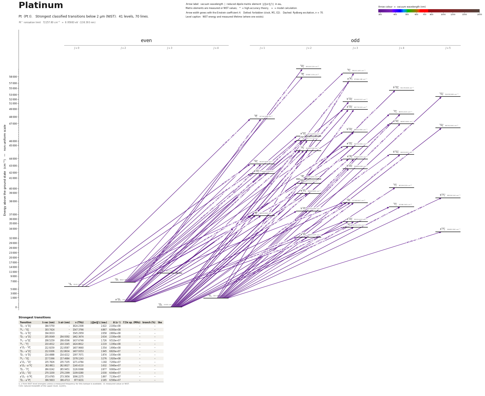

Platinum energy level diagram
Energy levels and transitions of neutral platinum (Pt I): the 70 strongest classified lines below 2 µm from the NIST Atomic Spectra Database and the 41 levels they connect, each line with its vacuum wavelength, frequency and, for 70 of them, the reduced dipole matrix element derived from the NIST transition rate. Lifetimes, hyperfine constants and isotope shifts from the literature have not been compiled for this element yet.
Hover a line or a level to isolate it, click to keep it selected. Scroll to zoom, drag to move.

Download: diagram (PDF) diagram (SVG) transitions (CSV) levels (CSV) source code

Strongest transitions of platinum
| Transition | λ vac (nm) | λ air (nm) | ν (THz) | |⟨J‖er‖J′⟩| (ea₀) | A (s⁻¹) | Γ/2π up. (MHz) | branch (%) | Use |
|---|---|---|---|---|---|---|---|---|
| 3D3 – b 5D°4 | 184.5750 | – | 1624.2308 | 2.422 | 2.100e+08 | – | – | |
| 3F4 – 3G°5 | 193.7424 | – | 1547.3766 | 4.867 | 6.000e+08 | – | – | |
| 3D3 – b 3D°3 | 194.0033 | – | 1545.2959 | 2.658 | 2.800e+08 | – | – | |
| 3D3 – a 3D°3 | 205.0049 | 204.9392 | 1462.3674 | 2.634 | 2.330e+08 | – | – | |
| 3F4 – a 3D°3 | 208.5259 | 208.4596 | 1437.6746 | 1.726 | 9.510e+07 | – | – | |
| 3F4 – 3F°4 | 210.4012 | 210.3345 | 1424.8612 | 2.219 | 1.190e+08 | – | – | |
| a 1D2 – 1P°1 | 212.9259 | 212.8587 | 1407.9660 | 1.554 | 1.690e+08 | – | – | |
| 3D3 – a 5D°4 | 212.9306 | 212.8634 | 1407.9353 | 1.945 | 8.820e+07 | – | – | |
| 3D3 – b 3D°3 | 214.4888 | 214.4212 | 1397.7071 | 1.874 | 1.030e+08 | – | – | |
| 3F4 – 3G°5 | 217.5366 | 217.4684 | 1378.1243 | 3.276 | 1.920e+08 | – | – | |
| a 1D2 – 5D°1 | 235.7826 | 235.7105 | 1271.4784 | 1.182 | 7.200e+07 | – | – | |
| a 1D2 – a 3F°2 | 262.8811 | 262.8027 | 1140.4110 | 1.632 | 5.940e+07 | – | – | |
| 3D3 – 3F°4 | 266.0242 | 265.9451 | 1126.9368 | 2.877 | 9.900e+07 | – | – | |
| a 1D2 – 3D°3 | 270.3200 | 270.2399 | 1109.0280 | 2.030 | 6.040e+07 | – | – | |
| a 1D2 – b 3P°2 | 273.4765 | 273.3956 | 1096.2275 | 1.897 | 7.130e+07 | – | – | |
| 3D3 – a 3P°2 | 306.5603 | 306.4713 | 977.9231 | 2.165 | 6.590e+07 | – | – |
λ, ν from NIST level energies unless a measured frequency for this isotope is available. A: measured value or NIST. Γ/2π: natural linewidth of the upper level, 1/(2πτ).
Listed Pt transitions below 2 µm
| Lower level | Upper level | λ vacuum (nm) | λ air (nm) | ν (THz) | Type | |⟨J‖er‖J′⟩| (ea₀) | A (s⁻¹) | Branching (%) | Source of matrix element / A |
|---|---|---|---|---|---|---|---|---|---|
| a 1D2 | 3D°2 | 173.7594 | – | 1725.3309 | E1 (intercombination) | 0.602 NIST | 2.800e+07 NIST | – | NIST ASD (accuracy E) |
| 3D3 | a 3F°3 | 173.8942 | – | 1723.9933 | E1 | 0.270 NIST | 4.000e+06 NIST | – | NIST ASD (accuracy E) |
| 3F4 | 3F°3 | 174.5886 | – | 1717.1364 | E1 | 0.542 NIST | 1.600e+07 NIST | – | NIST ASD (accuracy E) |
| 3D3 | b 5D°4 | 184.5750 | – | 1624.2308 | E1 (intercombination) | 2.422 NIST | 2.100e+08 NIST | – | NIST ASD (accuracy E) |
| 3F4 | 3G°5 | 193.7424 | – | 1547.3766 | E1 | 4.867 NIST | 6.000e+08 NIST | – | NIST ASD (accuracy E) |
| 3D3 | b 3D°3 | 194.0033 | – | 1545.2959 | E1 | 2.658 NIST | 2.800e+08 NIST | – | NIST ASD (accuracy E) |
| 3D2 | 3F°3 | 194.0477 | – | 1544.9419 | E1 | 0.502 NIST | 1.000e+07 NIST | – | NIST ASD (accuracy E) |
| 3D2 | 3P°2 | 194.4771 | – | 1541.5306 | E1 | 0.330 NIST | 6.000e+06 NIST | – | NIST ASD (accuracy E) |
| 3D3 | a 3D°3 | 205.0049 | 204.9392 | 1462.3674 | E1 | 2.634 NIST | 2.330e+08 NIST | – | NIST ASD (accuracy B) |
| 3D3 | 3F°4 | 206.8170 | 206.7510 | 1449.5539 | E1 | 1.285 NIST | 4.200e+07 NIST | – | NIST ASD (accuracy B+) |
| 3F4 | a 3D°3 | 208.5259 | 208.4596 | 1437.6746 | E1 | 1.726 NIST | 9.510e+07 NIST | – | NIST ASD (accuracy B) |
| 3F4 | 3F°4 | 210.4012 | 210.3345 | 1424.8612 | E1 | 2.219 NIST | 1.190e+08 NIST | – | NIST ASD (accuracy B+) |
| a 1D2 | 1P°1 | 212.9259 | 212.8587 | 1407.9660 | E1 | 1.554 NIST | 1.690e+08 NIST | – | NIST ASD (accuracy B) |
| 3D3 | a 5D°4 | 212.9306 | 212.8634 | 1407.9353 | E1 (intercombination) | 1.945 NIST | 8.820e+07 NIST | – | NIST ASD (accuracy B+) |
| 3D3 | b 3D°3 | 214.4888 | 214.4212 | 1397.7071 | E1 | 1.874 NIST | 1.030e+08 NIST | – | NIST ASD (accuracy B) |
| 3D3 | a 5D°2 | 215.4246 | 215.3569 | 1391.6352 | E1 (intercombination) | 0.546 NIST | 1.210e+07 NIST | – | NIST ASD (accuracy C+) |
| 3D3 | 3F°2 | 216.5891 | 216.5211 | 1384.1530 | E1 | 0.887 NIST | 3.140e+07 NIST | – | NIST ASD (accuracy B+) |
| 3F4 | a 5D°4 | 216.7317 | 216.6637 | 1383.2425 | E1 (intercombination) | 0.396 NIST | 3.470e+06 NIST | – | NIST ASD (accuracy B+) |
| 3F4 | 3G°5 | 217.5366 | 217.4684 | 1378.1243 | E1 | 3.276 NIST | 1.920e+08 NIST | – | NIST ASD (accuracy B+) |
| a 1D2 | a 5D°2 | 219.0865 | 219.0180 | 1368.3750 | E1 (intercombination) | 0.613 NIST | 1.450e+07 NIST | – | NIST ASD (accuracy C+) |
| a 1D2 | 3F°2 | 220.2910 | 220.2223 | 1360.8929 | E1 (intercombination) | 0.904 NIST | 3.100e+07 NIST | – | NIST ASD (accuracy B+) |
| 3D3 | a 3D°3 | 223.5621 | 223.4926 | 1340.9808 | E1 | 0.556 NIST | 8.000e+06 NIST | – | NIST ASD (accuracy B) |
| 3D3 | 5F°2 | 225.0005 | 224.9308 | 1332.4080 | E1 (intercombination) | 0.600 NIST | 1.280e+07 NIST | – | NIST ASD (accuracy B+) |
| 3D3 | b 5G°4 | 225.0597 | 224.9900 | 1332.0574 | E1 (intercombination) | 0.377 NIST | 2.810e+06 NIST | – | NIST ASD (accuracy B+) |
| a 1D2 | a 3D°3 | 227.5084 | 227.4381 | 1317.7207 | E1 (intercombination) | 1.082 NIST | 2.880e+07 NIST | – | NIST ASD (accuracy B+) |
| 3D3 | a 5P°3 | 227.5544 | 227.4841 | 1317.4540 | E1 (intercombination) | 0.358 NIST | 3.150e+06 NIST | – | NIST ASD (accuracy B+) |
| a 1D2 | 5F°2 | 228.9982 | 228.9276 | 1309.1478 | E1 (intercombination) | 0.671 NIST | 1.520e+07 NIST | – | NIST ASD (accuracy B+) |
| 3F4 | b 5G°4 | 229.3105 | 229.2398 | 1307.3646 | E1 (intercombination) | 0.971 NIST | 1.760e+07 NIST | – | NIST ASD (accuracy B+) |
| 3F4 | a 5P°3 | 231.9009 | 231.8296 | 1292.7612 | E1 (intercombination) | 0.624 NIST | 9.030e+06 NIST | – | NIST ASD (accuracy B+) |
| a 1D2 | 5D°1 | 235.7826 | 235.7105 | 1271.4784 | E1 (intercombination) | 1.182 NIST | 7.200e+07 NIST | – | NIST ASD (accuracy B+) |
| 3D2 | a 3D°3 | 236.9002 | 236.8278 | 1265.4801 | E1 | 1.093 NIST | 2.600e+07 NIST | – | NIST ASD (accuracy C) |
| 3F4 | b 5D°3 | 239.0264 | 238.9535 | 1254.2233 | E1 (intercombination) | 0.409 NIST | 3.540e+06 NIST | – | NIST ASD (accuracy B+) |
| 1S0 | 1P°1 | 240.3823 | 240.3092 | 1247.1486 | E1 | 0.651 NIST | 2.060e+07 NIST | – | NIST ASD (accuracy B) |
| a 1D2 | a 3D°1 | 243.7428 | 243.6689 | 1229.9542 | E1 (intercombination) | 0.653 NIST | 1.990e+07 NIST | – | NIST ASD (accuracy B+) |
| 3D3 | 5D°2 | 246.8147 | 246.7401 | 1214.6460 | E1 (intercombination) | 0.899 NIST | 2.180e+07 NIST | – | NIST ASD (accuracy B+) |
| 3D2 | b 3D°3 | 249.6565 | 249.5812 | 1200.8198 | E1 | 0.600 NIST | 6.700e+06 NIST | – | NIST ASD (accuracy C) |
| a 1D2 | 5P°2 | 249.9252 | 249.8499 | 1199.5285 | E1 (intercombination) | 0.721 NIST | 1.350e+07 NIST | – | NIST ASD (accuracy B+) |
| 3D2 | a 5D°2 | 250.9253 | 250.8497 | 1194.7479 | E1 (intercombination) | 0.765 NIST | 1.500e+07 NIST | – | NIST ASD (accuracy B+) |
| a 1D2 | 5D°2 | 251.6334 | 251.5577 | 1191.3858 | E1 (intercombination) | 0.661 NIST | 1.110e+07 NIST | – | NIST ASD (accuracy B+) |
| 3D2 | 3F°2 | 252.5066 | 252.4307 | 1187.2658 | E1 | 0.790 NIST | 1.570e+07 NIST | – | NIST ASD (accuracy B+) |
| 3F4 | 5F°4 | 253.9969 | 253.9206 | 1180.2997 | E1 (intercombination) | 0.809 NIST | 9.000e+06 NIST | – | NIST ASD (accuracy E) |
| 3D2 | a 3D°3 | 262.0349 | 261.9567 | 1144.0936 | E1 | 0.480 NIST | 3.700e+06 NIST | – | NIST ASD (accuracy B) |
| a 1D2 | a 3F°2 | 262.8811 | 262.8027 | 1140.4110 | E1 (intercombination) | 1.632 NIST | 5.940e+07 NIST | – | NIST ASD (accuracy B+) |
| 3D2 | 5F°2 | 264.0132 | 263.9345 | 1135.5207 | E1 (intercombination) | 0.814 NIST | 1.460e+07 NIST | – | NIST ASD (accuracy B) |
| 3D3 | 3D°3 | 264.7669 | 264.6881 | 1132.2882 | E1 | 1.190 NIST | 2.210e+07 NIST | – | NIST ASD (accuracy B+) |
| 3F4 | b 5F°5 | 265.1642 | 265.0853 | 1130.5918 | E1 (intercombination) | 0.986 NIST | 9.600e+06 NIST | – | NIST ASD (accuracy B+) |
| 3D3 | 3F°4 | 266.0242 | 265.9451 | 1126.9368 | E1 | 2.877 NIST | 9.900e+07 NIST | – | NIST ASD (accuracy B+) |
| 3D2 | a 5P°3 | 267.5365 | 267.4570 | 1120.5667 | E1 (intercombination) | 0.439 NIST | 2.910e+06 NIST | – | NIST ASD (accuracy B) |
| 3D3 | b 3P°2 | 267.7943 | 267.7148 | 1119.4877 | E1 | 0.742 NIST | 1.160e+07 NIST | – | NIST ASD (accuracy B+) |
| 1S0 | 5D°1 | 269.9226 | 269.8425 | 1110.6609 | E1 (intercombination) | 0.961 NIST | 3.170e+07 NIST | – | NIST ASD (accuracy B+) |
| a 1D2 | 3D°3 | 270.3200 | 270.2399 | 1109.0280 | E1 (intercombination) | 2.030 NIST | 6.040e+07 NIST | – | NIST ASD (accuracy B+) |
| 3F4 | 3D°3 | 270.6696 | 270.5894 | 1107.5954 | E1 | 1.692 NIST | 4.180e+07 NIST | – | NIST ASD (accuracy B+) |
| 3F4 | 3F°4 | 271.9837 | 271.9032 | 1102.2441 | E1 | 1.275 NIST | 1.820e+07 NIST | – | NIST ASD (accuracy B+) |
| 3D2 | 5D°1 | 273.0720 | 272.9912 | 1097.8513 | E1 (intercombination) | 0.735 NIST | 1.790e+07 NIST | – | NIST ASD (accuracy B) |
| a 1D2 | b 3P°2 | 273.4765 | 273.3956 | 1096.2275 | E1 (intercombination) | 1.897 NIST | 7.130e+07 NIST | – | NIST ASD (accuracy B+) |
| a 1D2 | 3P°1 | 277.2478 | 277.1659 | 1081.3160 | E1 (intercombination) | 0.872 NIST | 2.410e+07 NIST | – | NIST ASD (accuracy B+) |
| 1S0 | a 3D°1 | 280.4061 | 280.3235 | 1069.1367 | E1 (intercombination) | 0.623 NIST | 1.190e+07 NIST | – | NIST ASD (accuracy B) |
| 3D3 | a 5D°3 | 283.1126 | 283.0293 | 1058.9160 | E1 (intercombination) | 1.363 NIST | 2.370e+07 NIST | – | NIST ASD (accuracy B+) |
| a 1D2 | a 5D°3 | 289.4711 | 289.3863 | 1035.6559 | E1 (intercombination) | 0.798 NIST | 7.600e+06 NIST | – | NIST ASD (accuracy B+) |
| 3F4 | a 5D°3 | 289.8721 | 289.7871 | 1034.2233 | E1 (intercombination) | 0.513 NIST | 3.130e+06 NIST | – | NIST ASD (accuracy B+) |
| 3F3 | 5F°2 | 291.3105 | 291.2252 | 1029.1165 | E1 (intercombination) | 0.757 NIST | 9.400e+06 NIST | – | NIST ASD (accuracy C+) |
| 3D3 | 3F°3 | 293.0648 | 292.9791 | 1022.9562 | E1 | 1.377 NIST | 2.180e+07 NIST | – | NIST ASD (accuracy B+) |
| a 1D2 | 3F°3 | 299.8836 | 299.7962 | 999.6960 | E1 (intercombination) | 1.740 NIST | 3.250e+07 NIST | – | NIST ASD (accuracy B+) |
| 3F4 | a 5F°5 | 304.3517 | 304.2631 | 985.0200 | E1 (intercombination) | 1.086 NIST | 7.700e+06 NIST | – | NIST ASD (accuracy B+) |
| 3D3 | a 3P°2 | 306.5603 | 306.4713 | 977.9231 | E1 | 2.165 NIST | 6.590e+07 NIST | – | NIST ASD (accuracy B+) |
| 3D2 | a 3F°2 | 310.0925 | 310.0025 | 966.7840 | E1 | 0.626 NIST | 5.330e+06 NIST | – | NIST ASD (accuracy B) |
| a 1D2 | a 3P°2 | 314.0296 | 313.9387 | 954.6630 | E1 (intercombination) | 0.515 NIST | 3.470e+06 NIST | – | NIST ASD (accuracy B+) |
| 3D2 | 3D°3 | 320.4962 | 320.4036 | 935.4009 | E1 | 1.088 NIST | 1.040e+07 NIST | – | NIST ASD (accuracy B) |
| 1S0 | 3P°1 | 325.6849 | 325.5910 | 920.4985 | E1 (intercombination) | 0.521 NIST | 5.300e+06 NIST | – | NIST ASD (accuracy B) |
| 3D2 | 3P°1 | 330.2811 | 330.1860 | 907.6889 | E1 | 1.162 NIST | 2.530e+07 NIST | – | NIST ASD (accuracy B+) |
Reduced dipole matrix elements follow the convention A = ω³|d|²/(3πε₀ħc³(2J′+1)), with J′ the upper level. Tags show where a number comes from: measured, NIST compilation, high-accuracy theory, or a model calculation.
Pt energy levels
| Level | Energy (cm⁻¹) | J | Parity | Lifetime | gJ | Hyperfine A (MHz) | Hyperfine B (MHz) | Lifetime source | Hyperfine source |
|---|---|---|---|---|---|---|---|---|---|
| 3D3 | 0.000 | 3 | even | stable | 1.3339 | – | – | – | – |
| a 1D2 | 775.876 | 2 | even | – | 1.0666 | – | – | – | – |
| 3F4 | 823.661 | 4 | even | – | 1.2395 | – | – | – | – |
| 1S0 | 6140.170 | 0 | even | – | – | – | – | – | – |
| 3D2 | 6567.452 | 2 | even | – | 1.1169 | – | – | – | – |
| 3F3 | 10116.716 | 3 | even | – | – | – | – | – | – |
| a 3P°2 | 32620.005 | 2 | odd | – | 1.39 | – | – | – | – |
| a 5F°5 | 33680.390 | 5 | odd | – | 1.32 | – | – | – | – |
| 3F°3 | 34122.145 | 3 | odd | – | 1.21 | – | – | – | – |
| a 5D°3 | 35321.637 | 3 | odd | – | 1.33 | – | – | – | – |
| 3P°1 | 36844.695 | 1 | odd | – | 1.09 | – | – | – | – |
| b 3P°2 | 37342.089 | 2 | odd | – | 1.15 | – | – | – | – |
| 3F°4 | 37590.565 | 4 | odd | – | 1.25 | – | – | – | – |
| 3D°3 | 37769.067 | 3 | odd | – | 1.17 | – | – | – | – |
| b 5F°5 | 38536.144 | 5 | odd | – | 1.3 | – | – | – | – |
| a 3F°2 | 38815.894 | 2 | odd | – | 0.88 | – | – | – | – |
| 5F°4 | 40194.220 | 4 | odd | – | 1.21 | – | – | – | – |
| 5D°2 | 40516.229 | 2 | odd | – | 1.38 | – | – | – | – |
| 5P°2 | 40787.842 | 2 | odd | – | 1.2 | – | – | – | – |
| a 3D°1 | 41802.733 | 1 | odd | – | 0.92 | – | – | – | – |
| b 5D°3 | 42660.048 | 3 | odd | – | 1.19 | – | – | – | – |
| 5D°1 | 43187.829 | 1 | odd | – | 1.39 | – | – | – | – |
| a 5P°3 | 43945.534 | 3 | odd | – | 1.27 | – | – | – | – |
| b 5G°4 | 44432.651 | 4 | odd | – | 1.2 | – | – | – | – |
| 5F°2 | 44444.346 | 2 | odd | – | 1.21 | – | – | – | – |
| a 3D°3 | 44730.306 | 3 | odd | – | 1.19 | – | – | – | – |
| 3F°2 | 46170.376 | 2 | odd | – | 1.01 | – | – | – | – |
| a 5D°2 | 46419.952 | 2 | odd | – | 0.87 | – | – | – | – |
| b 3D°3 | 46622.490 | 3 | odd | – | 1.15 | – | – | – | – |
| 3G°5 | 46792.940 | 5 | odd | – | – | – | – | – | – |
| a 5D°4 | 46963.666 | 4 | odd | – | 1.34 | – | – | – | – |
| 1P°1 | 47740.568 | 1 | odd | – | 1.43 | – | – | – | – |
| 3F°4 | 48351.915 | 4 | odd | – | 1.25 | – | – | – | – |
| a 3D°3 | 48779.325 | 3 | odd | – | 1.22 | – | – | – | – |
| b 3D°3 | 51545.522 | 3 | odd | – | 1.24 | – | – | – | – |
| 3G°5 | 52438.588 | 5 | odd | – | – | – | – | – | – |
| b 5D°4 | 54178.509 | 4 | odd | – | – | – | – | – | – |
| a 3F°3 | 57506.228 | 3 | odd | – | – | – | – | – | – |
| 3P°2 | 57987.379 | 2 | odd | – | – | – | – | – | – |
| 3F°3 | 58101.165 | 3 | odd | – | – | – | – | – | – |
| 3D°2 | 58326.720 | 2 | odd | – | – | – | – | – | – |
Pt⁺ ionisation limit 72257.80 cm⁻¹ = 8.95883 eV (138.393 nm)
Sources
Atoms with measured data
- Lithium-632 levels, 85 lines
- Lithium-732 levels, 85 lines
- Beryllium-915 levels, 24 lines
- Sodium-2336 levels, 106 lines
- Magnesium-2418 levels, 61 lines
- Magnesium-2518 levels, 61 lines
- Potassium-3934 levels, 84 lines
- Potassium-4034 levels, 84 lines
- Potassium-4134 levels, 84 lines
- Calcium-4035 levels, 61 lines
- Calcium-4335 levels, 61 lines
- Rubidium-8536 levels, 94 lines
- Rubidium-8736 levels, 94 lines
- Strontium-8740 levels, 70 lines
- Strontium-8840 levels, 70 lines
- Caesium-13331 levels, 79 lines
- Barium-13744 levels, 89 lines
- Barium-13844 levels, 89 lines
- Dysprosium-16339 levels, 55 lines
- Dysprosium-16439 levels, 55 lines
- Ytterbium-17118 levels, 26 lines
- Ytterbium-17418 levels, 26 lines